Guide
MockTab's settings address tablet behavior, input device properties, and technical configuration. This guide covers each settings pane and explains the concepts that tie them together. MockTab saves all changes automatically.
Getting started
Open the Devices pane to confirm MockTab sees the tablet, then Tablet Area to set the active region and orientation. The settings window contains multiple panes:
- Devices: connected tablet status, battery level, connection type.
- Profiles: named presets and per-app setting overrides.
- Button Mapping: pen buttons, express keys, and touch ring actions.
- Tablet Area: active area crop and orientation.
- Display Mapping: target display and calibration offsets.
- Pen Feel: pressure response, smoothing, double-click behavior, rotation handling.
- Touch: finger-touch scrolling, tap-to-click, and active touch area (on supported models).
- Scratchpad: empty canvas for testing input quality.
- Info: live tablet state for diagnostics.
Settings layers
MockTab resolves settings in four layers, from broadest to most specific:
- Device defaults: the baseline for this tablet.
- Tool overrides: the stylus, eraser, and mouse each carry their own settings, keyed by serial number. Multiple pens each retain their own pressure curve and button bindings.
- Active profile: a named preset that overrides device defaults when activated.
- App override: a per-app layer that activates automatically when a specific application becomes frontmost.
Editing an app override changes only that app; the profile beneath stays intact. The status bar at the bottom of the window shows the currently detected app override, if any.
Devices
The Devices pane lists every tablet MockTab has detected. For each tablet, the pane shows the model name, connection status, and battery level if applicable.
When multiple tablets are connected simultaneously, MockTab treats each as an independent device with its own settings. The tab bar at the top of the window switches between them.
For Bluetooth pairing instructions and other first-run setup, see the Configuration page.
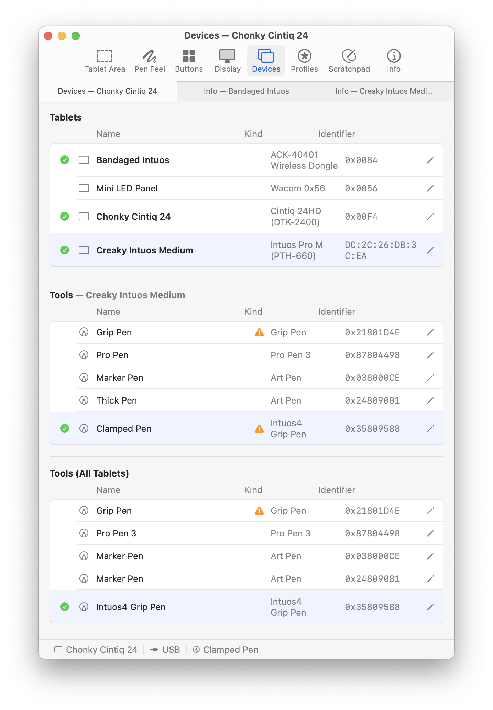
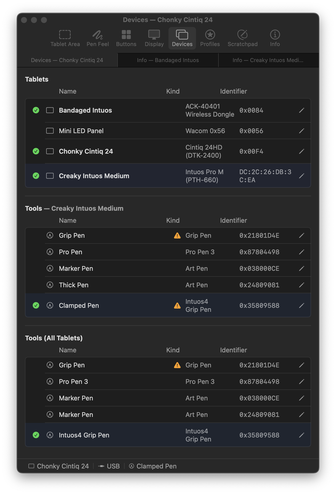
Profiles
A profile stores a device's full configuration state (display mapping, pressure, button assignments) for instant switching between workflows. Create a profile from the current settings, then switch to it later to restore that state.
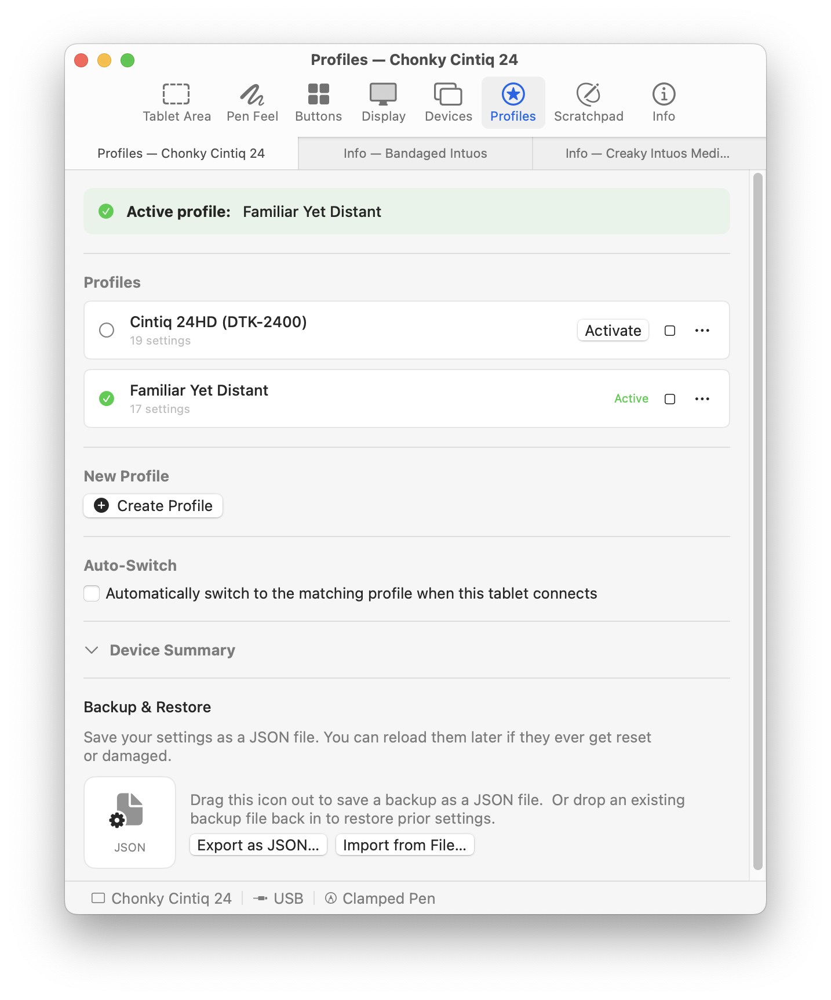
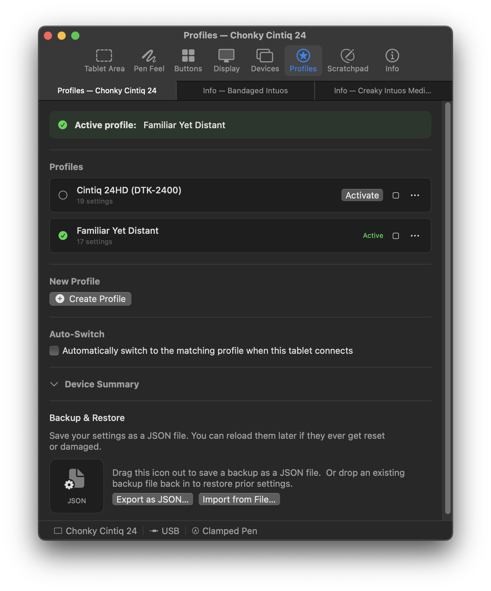
Per-app overrides
The bar at the top of the Buttons, Tablet Area, Display, and Pen Feel panes controls per-app overrides. The Global chip edits the underlying layer; each per-app chip edits settings that apply only when that app is frontmost.
Add apps for customization using the drop-down menu, or drag directly from Finder or Dock onto the app bar to add manually. (Hold down ⌘ while dragging an app's icon from the Dock to make it available as a droppable item.)
Each override entry tracks customizations for that app. An override with no customized keys does not appear in the chip row. Removing an override deletes all its customized keys and restores the underlying layer.
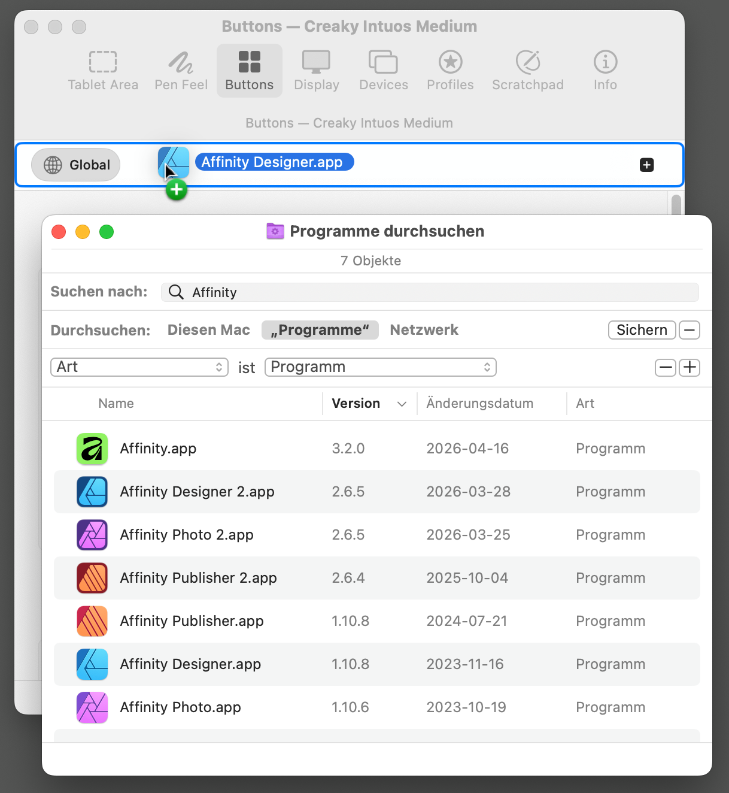
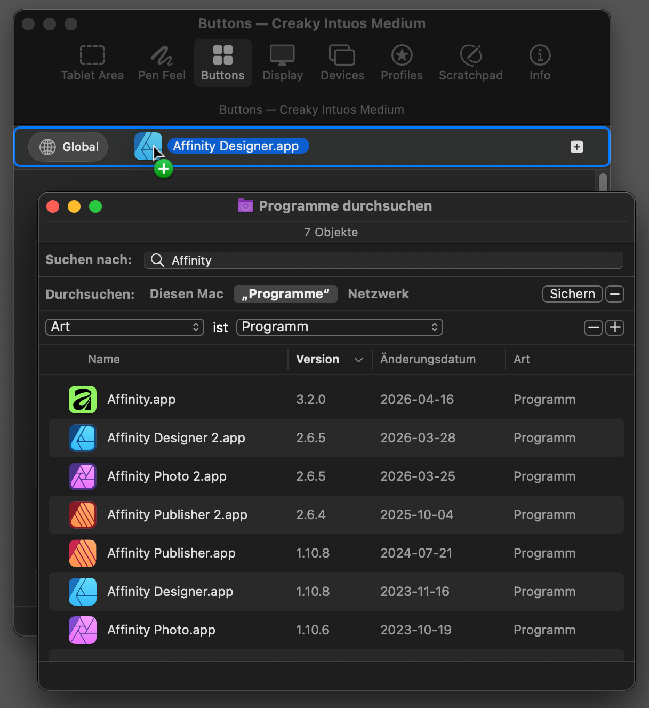
Auto-switching profiles
The Auto-Switch section in the Profiles pane lists applications that trigger a profile change when they become frontmost. Activating auto-switch for an app makes MockTab load the associated profile automatically when that app gains focus. Disabling auto-switch stops automatic switching for that app.
Export and import
MockTab exports profiles as plain JSON files containing all settings except per-serial tool overrides and app overrides. Use Export to save a profile to a file. Use Import to load a profile from a file. Importing merges saved settings into the current configuration without replacing existing named profiles.
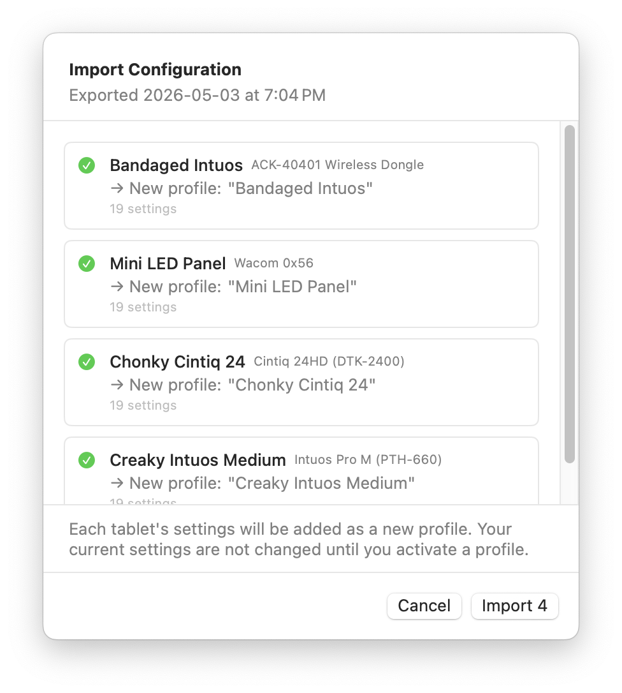
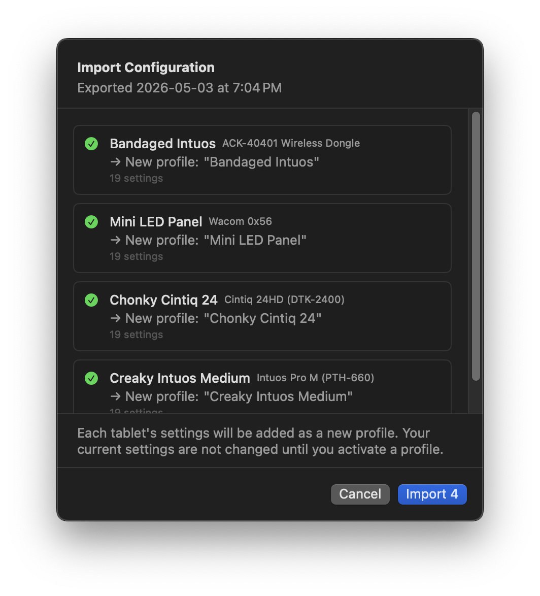
Button Mapping
The Button Mapping pane assigns actions to every physical control on the tablet: pen tip, eraser, barrel buttons, express keys, and touch ring.
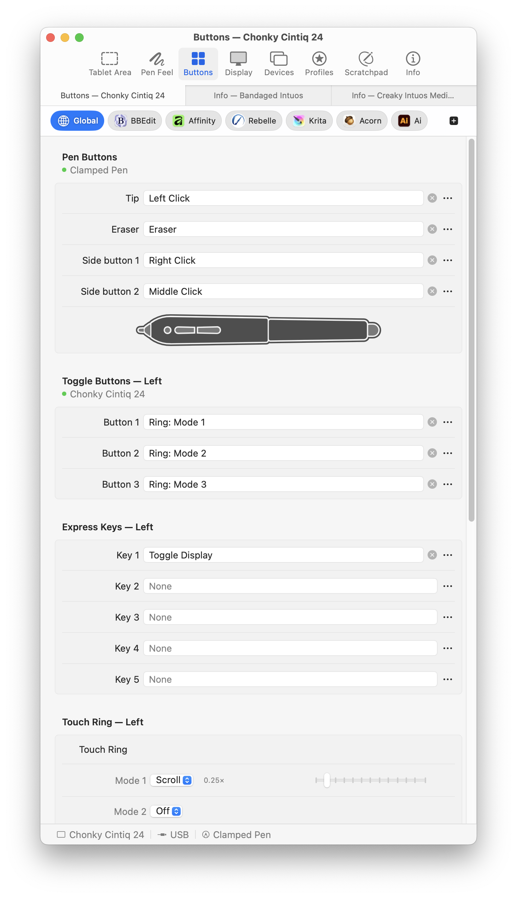
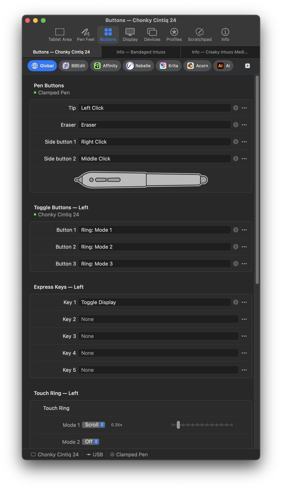
Binding kinds
Each button accepts one of the following action types:
-
None
The button performs no action.
-
Left / Right / Middle Click
Sends the corresponding mouse click at the current cursor position. Middle Click + Tip sends the same click but also sets tablet pressure fields, which SketchUp and a few other applications require to recognize the input.
-
Double Click
Sends two rapid clicks with click state 2, which macOS interprets as a double-click. Useful for renaming files in Finder or entering text fields in some applications.
-
Eraser
Toggles the cursor to the eraser tool. The next tip contact uses the eraser end. Flipping the pen back to the tip end restores normal operation.
-
Spacebar
Sends a spacebar keydown/keyup pair. Useful for panning in applications that use Space + Drag.
-
Key Combination
Sends a keyboard shortcut with optional modifiers (⌘ ⌥ ⇧ ⌃). Click the record button and type the desired shortcut to capture it.
-
Toggle Display
Cycles the tablet to the next display in the rotation set. Configure the rotation in the Display Mapping pane.
-
Ring: Cycle
Advances the touch ring to the next slot. See Touch ring and slots below.
-
Ring: Mode N
Jumps the touch ring directly to a specific slot without cycling through intermediate slots.
Recording key combinations
Click the record button next to a Key Combination binding, then type the shortcut. MockTab captures the base key and any modifiers simultaneously. Modifier-only combos (e.g. ⌘ held alone) send a flagsChanged event rather than a keydown/keyup; Adobe applications may rely on this distinction.
Key combos persist the full modifier state at capture time. If the keyboard layout changes (such as Qwerty-Control for Dvorak while holding ⌘), the stored keycode still produces the correct character because macOS applies layout switching to the captured keycode at post time.
Pen buttons
Most Wacom pens have one or more barrel buttons. Button 1 (the lower button) defaults to Right Click; Button 2 defaults to Middle Click. Some pens carry additional buttons (3, 4, 5) on grip-mounted accessories or cordless mice.
Button 1 also drives hover drag: holding Button 1 while the pen hovers above the tablet surface causes the cursor to drag without requiring tip contact. This enables click-and-drag gestures without setting the pen down.
Express keys
Some tablet models feature hardware buttons known as express keys. Each key accepts any binding kind. Express keys are transient: they signal only press and release, with no hold state. For actions that require a hold (such as panning in some applications), bind a keyboard modifier through a Key Combination instead.
Touch ring and slots
The touch ring (or side scroll wheel on some Intuos models) supports up to four independent modes called slots. Each slot specifies an action and a speed multiplier. The LED ring on supported devices indicates the currently active slot. The Cintiq 24HD's dual rings use three slots each rather than four. The center button on the touch ring carries its own independent binding, separate from the rotation slots.
Each slot operates in one of three modes:
| Mode | What it sends | Speed multiplier |
|---|---|---|
| Scroll | macOS scroll wheel events. | Scales scroll lines per physical ring step. Above 1.0 is more responsive; below 1.0 is more deliberate. |
| Key Press | A recorded key combo for clockwise rotation and a separate combo for counter-clockwise. | Higher values produce more key presses per physical step. |
| Off | The ring produces no events. | — |
Record clockwise and counter-clockwise key combos the same way as pen button key combos: click record and type. Common Key Press uses include brush size ([ / ]) or layer navigation (⌘⇧[) in drawing applications.
Touch strips (horizontal strip sensors on older Intuos tablets) route through the same slot system. Each strip behaves as an independent slot with the same action/speed configuration.
Bind Ring: Cycle to a pen button or express key to switch ring modes without looking at the screen. Ring: Mode jumps directly to a specific slot.
Tablet Area
The Tablet Area pane defines the portion of the tablet surface that maps to the target display. The visual editor shows the full digitizer area with a draggable crop rectangle.
Proportional mapping enables letterboxing that matches the target display's aspect ratio. Without this, a rectangular tablet mapping to a wide monitor stretches the horizontal axis, producing oval circles instead of round ones.
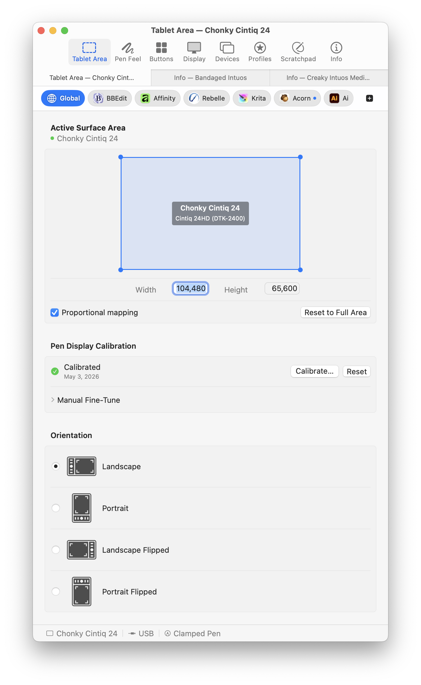
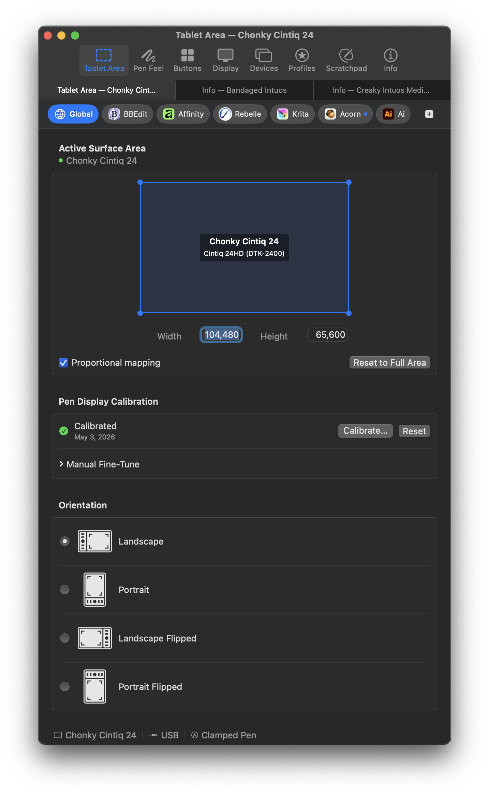
Tablet orientation
The four orientation settings represent 90-degree rotations of the tablet:
- Landscape: 0 degrees. The tablet maps without rotation.
- Portrait: 90 degrees clockwise.
- Landscape Flipped: 180 degrees.
- Portrait Flipped: 90 degrees counter-clockwise.
If the pen maps left-to-right when the tablet sits in portrait orientation, or if the active area crop appears on the wrong physical side of the tablet, select the orientation that matches how the tablet is positioned.
Display Mapping
The Display Mapping pane controls which screen receives the tablet's input and applies calibration offsets.
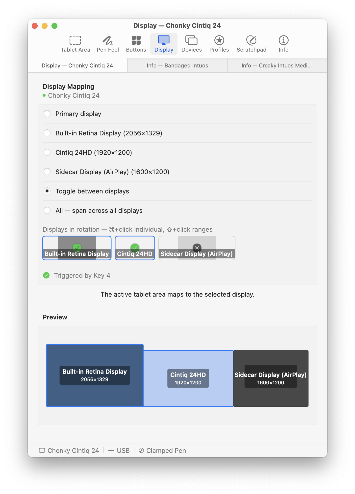
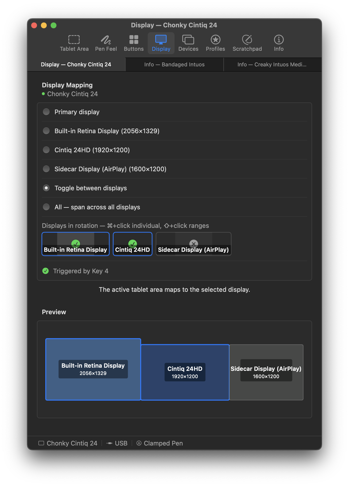
Target display
Primary display maps the tablet to the main screen. A numbered display entry maps to a specific secondary monitor. Toggle between displays cycles through a configurable rotation set each time a button assigned to Toggle Display is pressed. All spans the tablet across every connected display as one continuous surface.
The Included displays section limits which monitors appear in the toggle rotation, bypassing excluded entries. Use this to exclude a particular monitor (such as a pen display attached to the side) from the rotation.
Calibration
Offset X and Offset Y apply a linear shift after the tablet-to-display mapping. Use these to nudge the cursor into alignment with the physical pen tip on pen displays, where the screen and digitizer may have slight manufacturing offsets.
Parallax Offset provides finer-grained control, giving sub-pixel adjustment for applications that demand precise tip-to-cursor alignment.
MockTab caches display bounds and calibration data between events. When the display configuration changes (monitor plugged in or unplugged, resolution changed), MockTab re-queries the display list on the next tablet event.
Pen Feel
The Pen Feel pane adjusts how physical pen actions translate into input events.
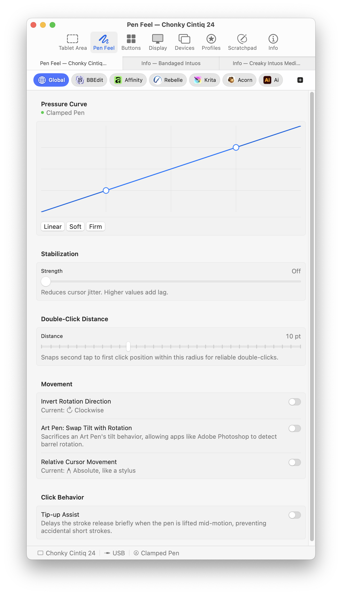
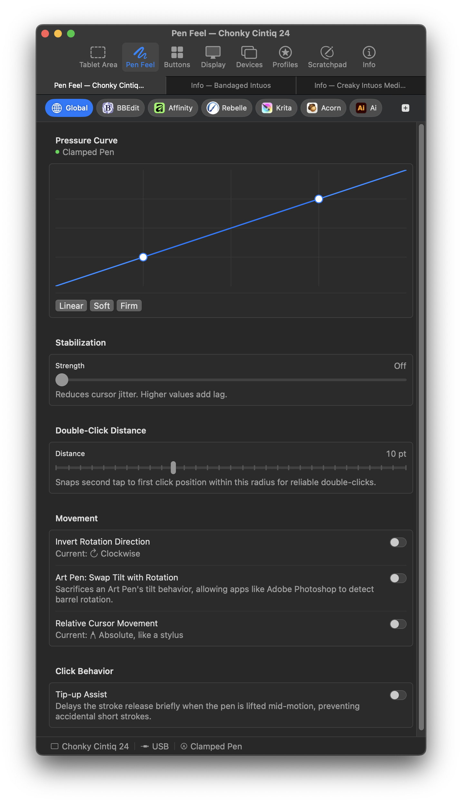
Pressure curve
The pressure curve controls how pen pressure maps to the value the application receives. Three built-in presets ship with MockTab:
- Linear: pressure maps directly with no modification. Use this when a custom curve is already configured in the target application.
- Soft: lighter touch produces more gradual pressure buildup. Suitable for ink and brush work where fine control near zero pressure is needed.
- Firm: requires more force before pressure increases noticeably. Useful for felt-tip markers and technical drawing where a crisp minimum mark is preferred.
The Bézier curve editor provides full control over the response shape. The horizontal axis represents physical pressure (0 to 100%); the vertical axis represents the value the application receives. Drag the handles to reshape the curve. The editor preview updates in real time.
Smoothing
The smoothing slider applies an exponential moving average to cursor position, reducing jitter from hand tremor. Higher values smooth more aggressively but add perceptible lag. For drawing, modest values balance smoothness and responsiveness. For pixel-precise retouching or selection work, set smoothing to zero.
Smoothing affects only cursor position. It does not alter pressure, tilt, or rotation values, and it does not change how strokes appear in the target application. It controls only how the on-screen cursor moves.
Double-click distance
When a second tap lands within the configured radius, MockTab snaps it to the first tap's position — guaranteeing macOS registers it as a double-click regardless of small hand movements between taps. Set the slider to zero to disable position snapping.
Rotation handling
Invert Rotation Direction: some applications interpret Art Pen barrel rotation in the opposite direction from physical expectation. Enable this to reverse the mapping. MockTab stores this preference per-tool, so different pens can have different inversion settings.
Art Pen: Swap Tilt with Rotation: Adobe Photoshop does not read the macOS tablet rotation axis through the standard event path. Enabling this option feeds barrel rotation into Photoshop's Pen Tilt control by sending synthetic tilt values instead. MockTab suppresses real tilt while this option is on. In Photoshop, configure Brush Dynamics → Shape Dynamics → Angle → Pen Tilt.
Enabling rotation-as-tilt reveals two additional controls:
- Tilt Offset: rotates the neutral pen orientation. Set this so that holding the pen at its natural resting angle produces zero tilt in the application.
- Tilt Magnitude: scales the effective tilt range. Lower values reduce tilt sensitivity; 100% maps a full barrel rotation to the full tilt range.
Relative cursor movement
When enabled, the pen operates in mouse-emulation mode: each report moves the cursor by the delta from the previous position, scaled to the display dimensions rather than to tablet coordinates. The cursor does not map to a fixed screen position. Useful for presentations or environments where a pointer device is more convenient than absolute pen mapping.
Relative mode ignores display targeting and calibration: the full active area maps to the full virtual screen space. The cursor clamps to the screen bounds so it can reach any corner of any display.
Touch
The Touch pane controls finger-touch behavior on tablets with a capacitive surface. Touch input operates independently from pen input and has its own enable toggle, sensitivity, and active area.
Enable finger touch activates touch processing. On some models, the physical touch toggle on the tablet body must also be on; MockTab cannot override that switch.
Two-finger scroll sends smooth trackpad-style scroll events when two fingers move together. Apps treat these the same as Magic Trackpad scrolling, including rubber-banding in Safari and Preview. Reverse direction inverts the scroll axis for a classic mouse-wheel feel. Sensitivity scales the cursor movement speed in pointer mode.
The Touch Area editor works like the Tablet Area editor: drag the handles in the visual preview to crop the active touch region. Contacts outside the rectangle have no effect. The touch area is independent from the pen active area; most users leave the full surface enabled for touch and crop only the pen area.
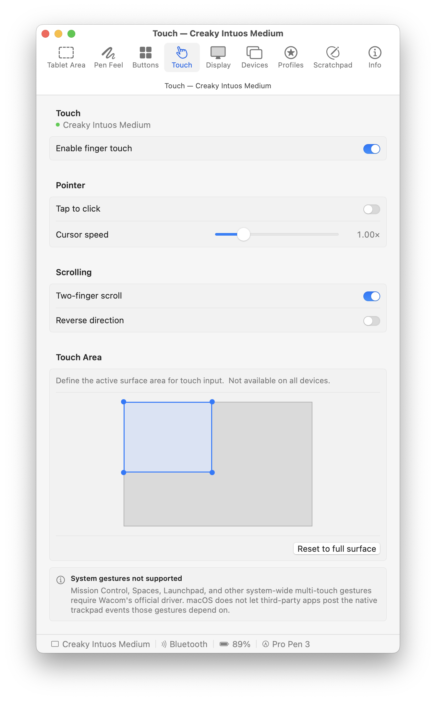
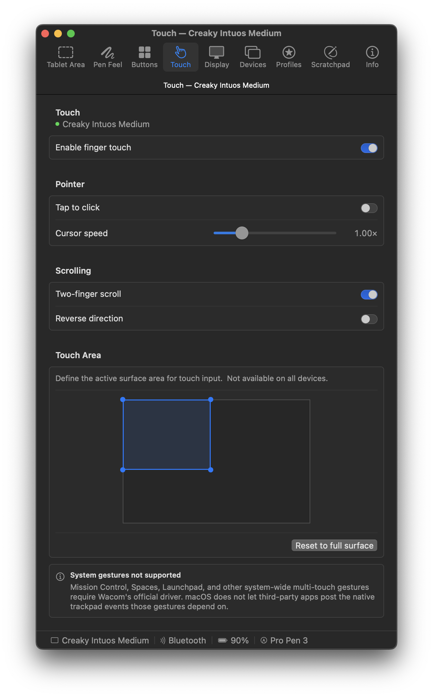
Scratchpad
The Scratchpad pane is an empty canvas for testing input quality without launching a drawing application. It visualizes pressure, tilt, and rotation in real time. MockTab does not save canvas contents when the window closes.
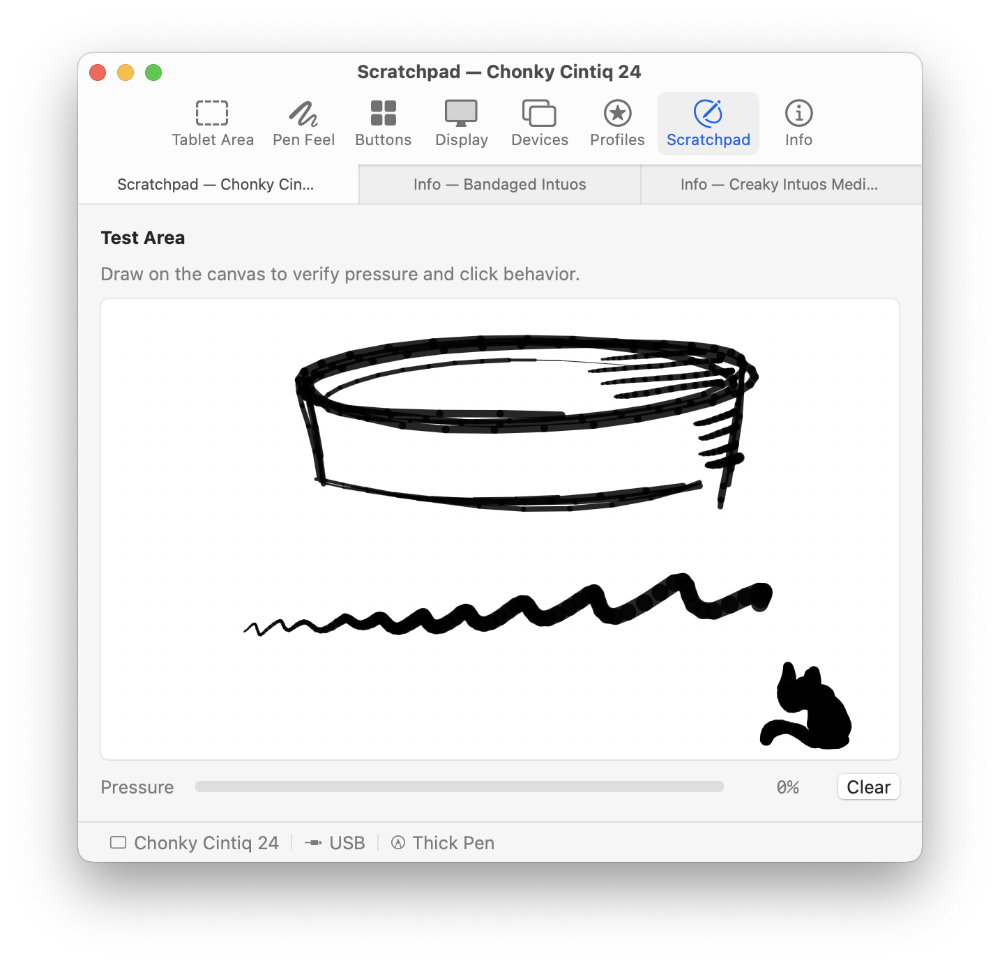
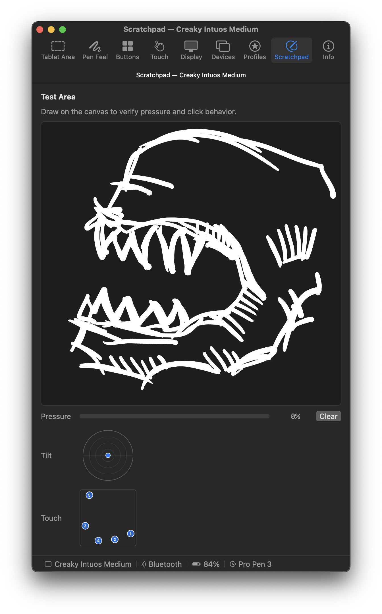
Info
The Info pane displays live tablet state: current pen position in raw tablet coordinates, button states, proximity flag, and hover distance.
The Jitter readout indicates the stability of pen input. Sustained values that exceed the baseline may indicate interference, low battery (on Bluetooth tablets), or a hardware problem with the tablet.
This pane serves diagnostics: verifying that the tablet sends data, checking whether a button registers, or confirming calibration alignment without switching to a drawing application.
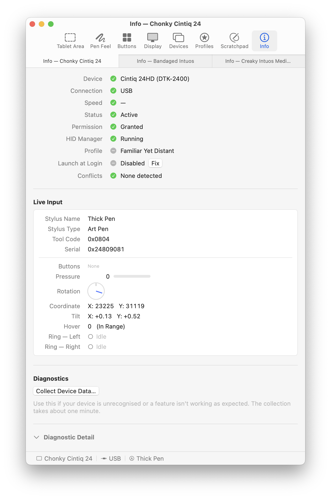
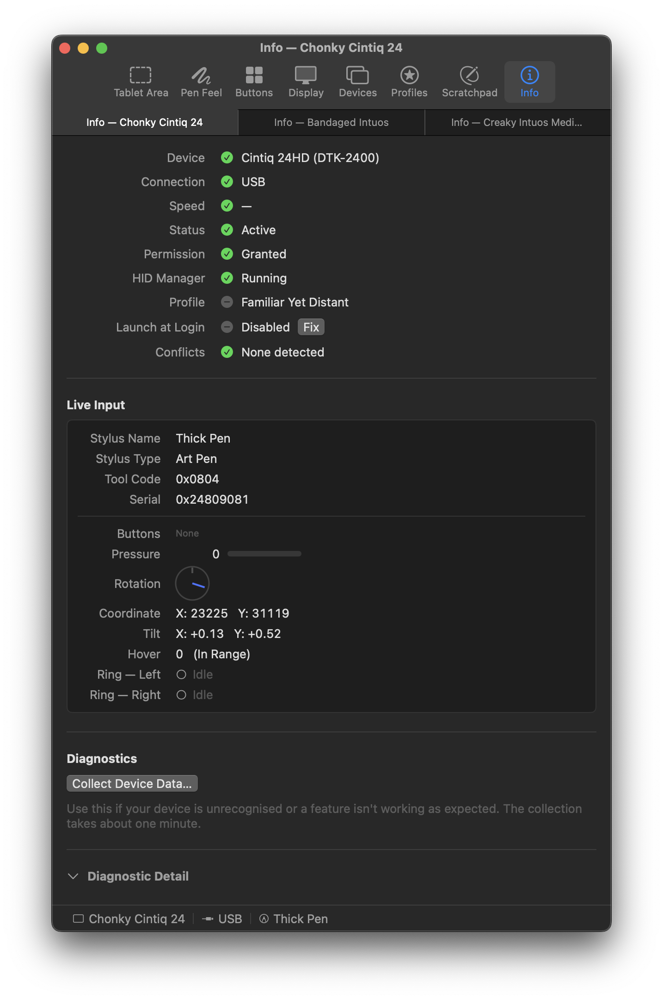
Collecting device data
The Collect Device Data button opens a guided capture sheet that records HID activity from the tablet. Two modes exist depending on whether MockTab recognizes the connected device.
For recognized tablets, the sheet records all incoming reports for up to an hour while you perform whatever action produced the problem. Click Done when finished. MockTab writes a compact JSON summary to the Desktop — which byte positions changed and what values they took — then opens a pre-filled GitHub issue with the file attached.
For unrecognized tablets, the sheet steps through a guided sequence (pen tip, buttons, eraser, express keys, touch ring, and finger touch), capturing one sample per step. Skip any step the device does not have. The same JSON summary and issue flow applies at the end.
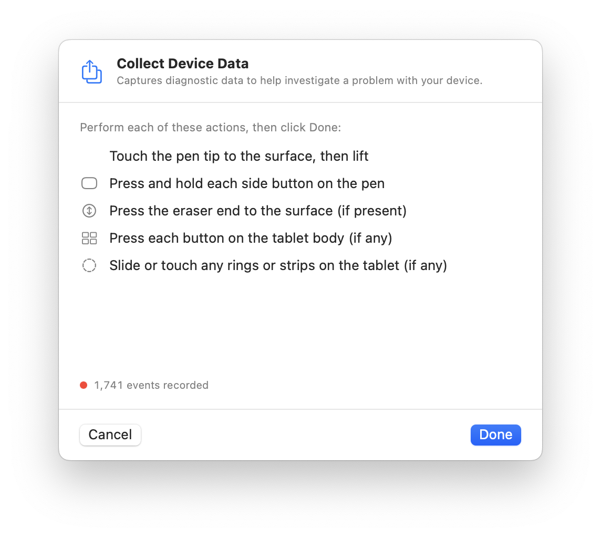
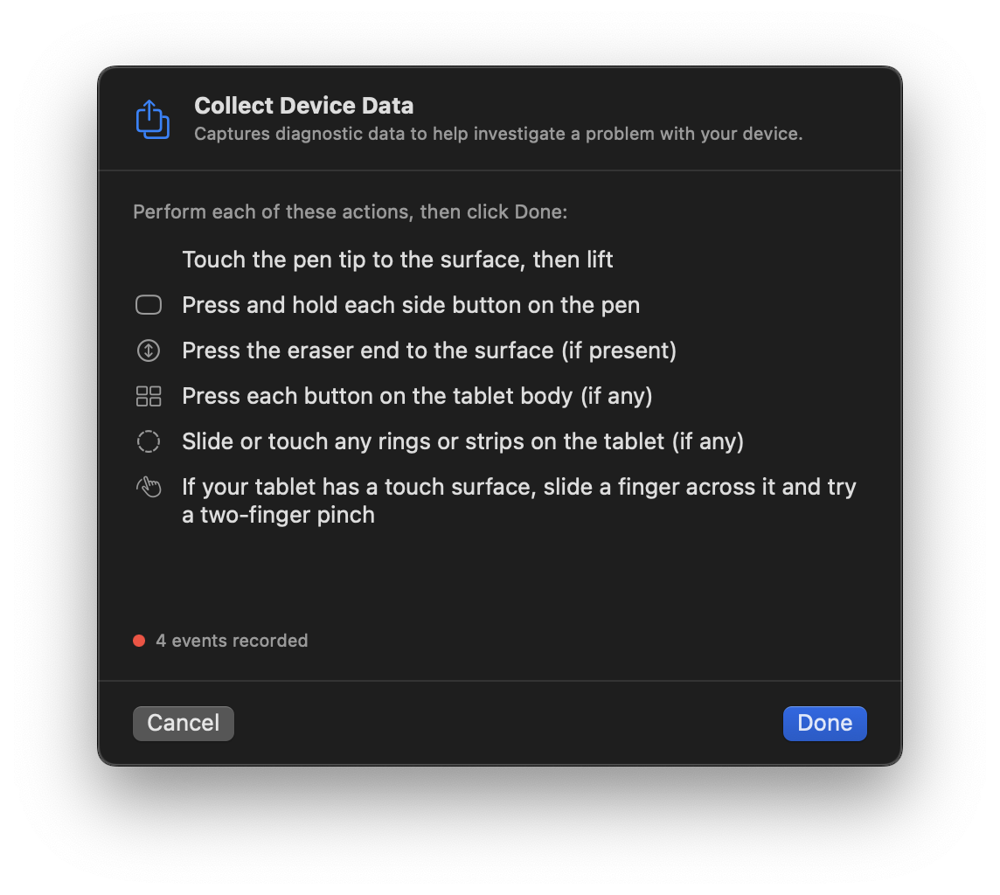
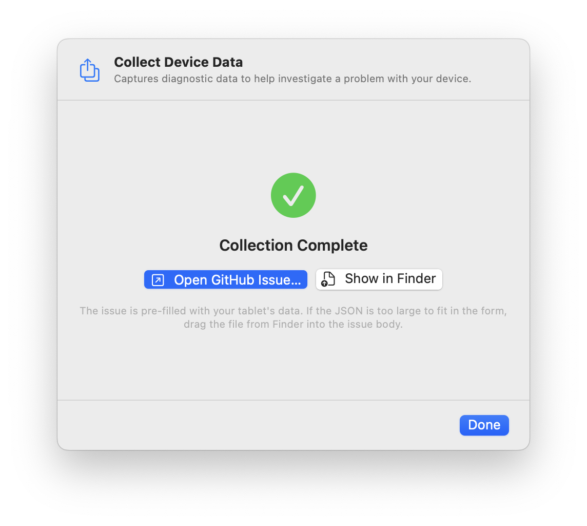
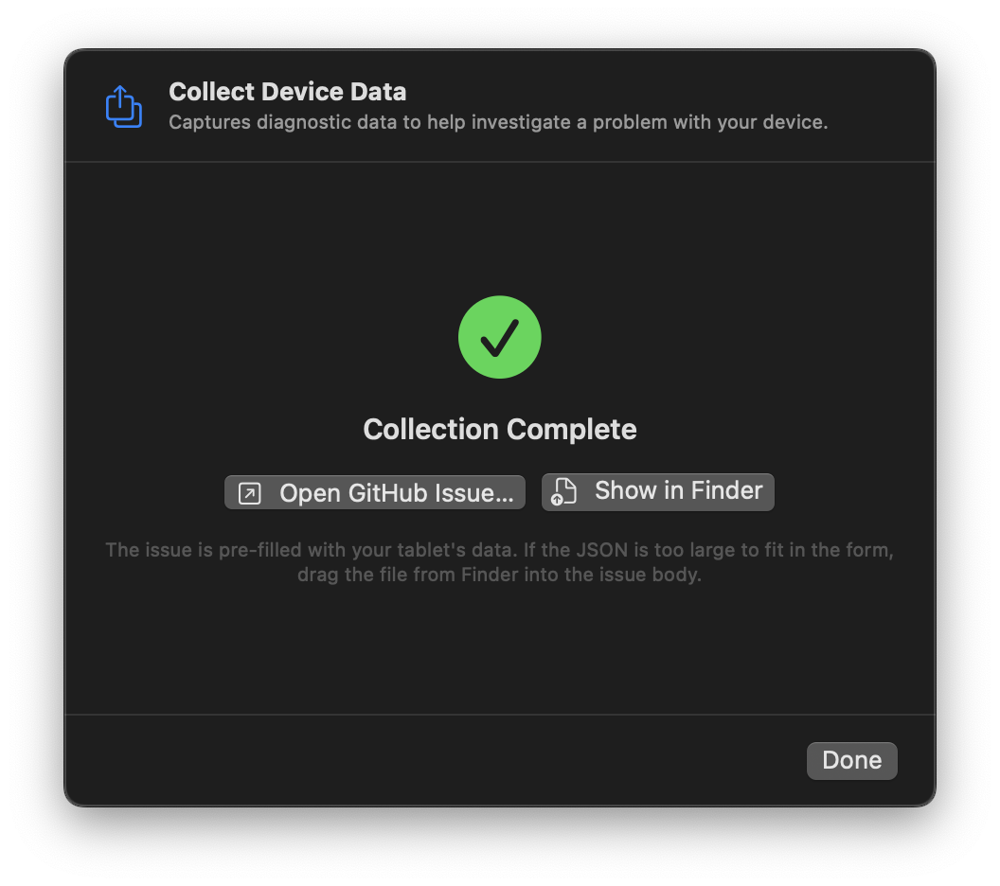
Getting help
For help beyond in-app diagnostics, open an issue on the GitHub Issues tracker.